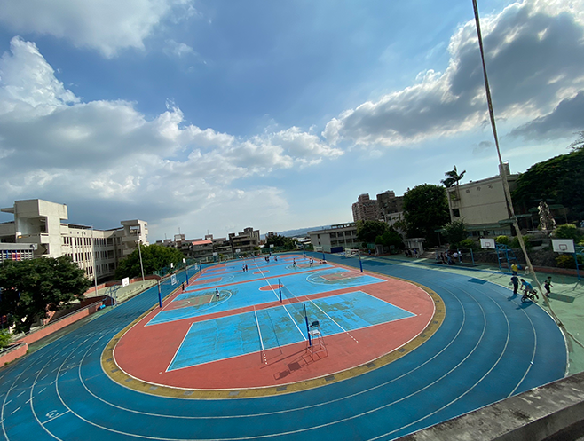

復興高中特色
-
寧靜開闊 最適修業
本校地處山坡，可遠眺關渡平原與台北盆地，學生們的視野變得更開闊、胸襟變得更寬廣。又因遠離塵囂，寧靜優雅，無車聲市聲干擾，最適於修心養性、進德修業、切磋學藝。
-
民主開明 適性開創
本校校風民主開明，學生健康快樂，教學適性開創，課程設計推出進階課程，供同學們及早奠定繼續深造的基礎。
-
冷氣教室 設備完善
本校所有教學空間、學生教室均已裝設冷氣，使學生上課、老師授課皆獲得最佳效果。除一般教學設備完善之外，本校更擁有一座實驗劇場，是公立高中所僅見；近年來更汰舊換新不少儀器設備，校友們返校常有耳目一新之感。
-
捷運專車 通學方便
捷運淡水線直通中和南勢角後，本校與北市各區皆能於三十分鐘內到達，上下學時並有由校門直達捷運站之接駁公車。又辦理學生專車（雙層冷氣遊覽車），目前有上學專車共15線，其新穎舒適、快速安全的服務，深獲學生、家長信任與好評。
-
社區高中 多元發展
因應高中多元入學方案，本校對於北投地區國中畢業生有優先錄取的做法，鼓勵本地學生就近入學。
其次北投為臺北古文化區，鄰近臺北藝術大學、文化大學，擁有絕佳藝術教育資源，回收一千六百坪校地足資興築藝術大樓，故於八十六年度開始設立藝術類科（有音樂、美術、戲劇、舞蹈四科）使校園更添藝術姿彩並成立體育班，發展桌球、撞球、柔道、空手道等運動項目，培育體育人才。 社區高中的多元面相，本校已然具備。
-
生涯規劃 個別輔導
本校特別重視學生生涯規劃教育，除辦理各類講座、團體輔導以外，高一開設「生涯輔導課程」，提供學生完整興趣探索及學習規劃指導；班級導師、輔導老師及教官均學有專精，熱心負責樂於指點。
另開設「學習門診」及「衝刺加油站」，安排各科教師協助自修同學解決疑惑；針對領有身心障礙手冊、情緒困擾、單科學習困難或單科深具潛力的學生辦理資源班、潛力開發營，以因應特殊需要，照顧不同族群的同學。
校園環境

由於地形與位址的關係，操場大面積有著長時間的日光照射，再加上周圍沒有高樓大廈
晚上時可以在操場上仰望星空，有點時候可以很清晰的看到數個閃耀的星星，
還有皎潔的月亮
我曾在練完球的片刻，無意間發現了星月交輝的萬象，頓時被此般景色吸引住。(可惜沒能拍照給大家看
QuQ )
熱食部是眾多學生午餐的選擇，有著高達100種食物的選擇，
-
妳可以選擇最左邊的，有點類似早午餐店，但它的飲料選擇卻是超商等級的(真的比飲料店還多
0u0)
有多種口味的冰沙、果汁、紅茶奶茶綠茶、還有妳想不到的飲料
食物的話有炸雞、雞排、雞塊，雞米花、薯條、地瓜球、黑胡椒麵、漢堡、鬆餅、吐司
中間柱子則有他們的調味罐，胡椒梅粉應有竟有。 -
還可以選擇中間的，麻辣燙，如果你覺得外面的麻辣燙太貴太燙，不妨來嘗試這家，有著乾滷跟湯滷的選擇
配料有差不多20種，丸子、魚板、豬血糕、豬血、高麗菜、空心菜、大菠菜、牛肉、豬肉、竹輪、很多很多我還可以說的
在中間的柱子有調味的地方，如果怕辣的可以加點醬油，愛吃辣的也可以加辣椒醬 本人已經常駐這家店很久了，所以比較了解，我認為價格普通，是個午餐好選擇 ! - 最後是右邊的 這邊就像便當店，有著便當店的主食跟小菜，聽周邊的人說很好吃 但我沒吃過別問我((X